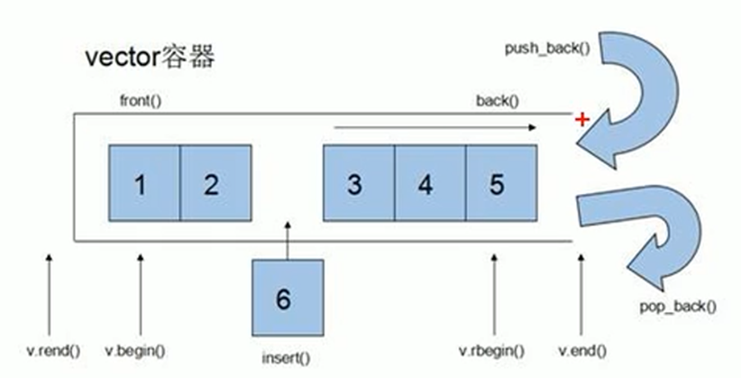
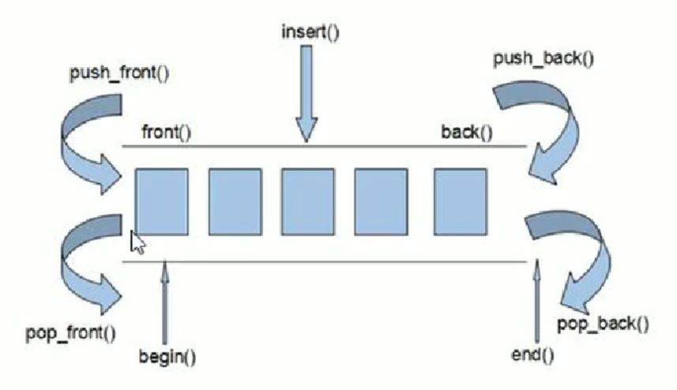
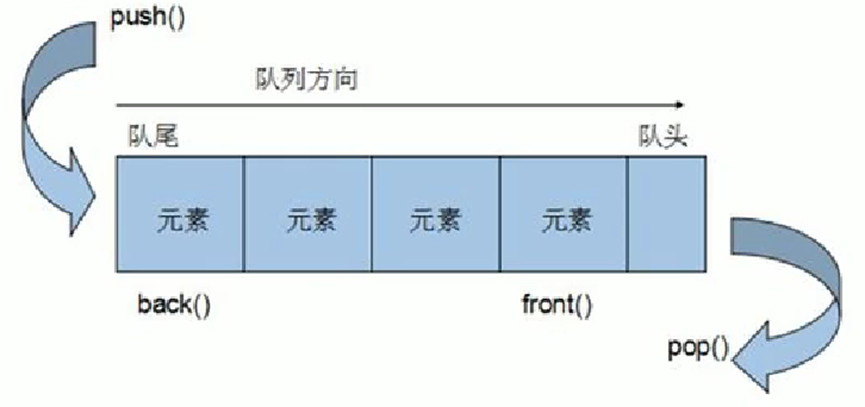

指令：计算机进行程序控制的最小单位
软件：一系列按照特定顺序组织的计算机数据和指令的集合
计算机不能直接读懂编程语言，而人类无法直接读懂机器代码，所有编译器在其中充当一个翻译，在人类和计算机之间进行沟通
编译是将源代码编译成目标代码，如果源代码在操作系统上运行，目标就是汇编代码，如C++；如果在虚拟机或解释器上运行，目标代码就是解释器能理解的中间代码。最后，通过汇编过程将汇编代码或中间代码转化为机器码
编译的最终目标是将源代码编译成目标程序
代码转变过程：高级语言--汇编语言--机器语言，从高级语言到汇编语言即编译过程
即第二代计算机语言，又称符号语言，用一些容易理解和记忆的缩写单词来替代一些特定的指令，如 ADD 代表加法，INC 代表增加一，MOV 代表变量传递等
代码编辑器仅仅提供代码编辑功能，无法编译代码
集成开发环境（IDE）是一种提供程序开发环境的应用程序，一般包括代码编辑器、编译器、调试器、用户图形界面等工具，常见的 IDE 有 Visual Studio、Pycharm等
VSCode 为代码编辑器，不自带编译器，需要自行配置环境才能正常编译代码；VS 为集成开发环境，有着一整套程序开发工具
顺序结构：最基础的程序结构，必须存在
分支结构：在多个分支中，根据条件进入其中的某一个或几个分支
循环结构：根据条件不断重复某段代码
跳转结构：将程序跳转到指定代码的位置
C++是C的一个超集，是在C上扩展而来的，最主要的是增加了面向对象的功能
C++速度极快，这是因为它接近底层，它不会检查内存是否泄露，也不会检查指针是否为伪指针，这些都需要程序员自己来实现，因此提高了程序员的工作量，换来了性能好的特点
C 和 C++ 中的代码块需要用{}括起来作为区分，诸如if...else这样的代码块。同时，if等语句的条件判断，也需要用()括起来。每行语句结束后，需要用;结束。声明变量与变量赋值相分离，可先声明一个变量，之后再去赋值
头文件是拓展名为.h的文件（C语言），或.hpp的文件（C++）。头文件包含了C 或 C++函数的声明和宏定义，被多个源文件中引用共享。可分为程序员自己编写的头文件，以及编译器自带的头文件
在程序中使用头文件，需要使用#include预处理指令来引用它。如#include <math.h>。这种预处理语句一般放在编程源文件的最上方
建议把所有常量、宏、系统全局变量和函数原型写在头文件中，需要使用时随时引用这些头文件
系统头文件类似于Python中的库，需要的时候就去调用。不同点在于，头文件中没有实现，在引用头文件后，调用其函数时，会在头文件同名的源文件中去找函数的实现
在一个C++程序中，一般只包含两类编程文件：头文件和源文件。源文件是以.c（C 语言）或.cpp （C++）为后缀的文件，和头文件一样，也是放的源代码，但头文件中是一些声明，而源文件中需要去实现
一般编程都是用源文件编程的
变量本质在给指定的内存空间取名字，方便操作这段空间
语法：数据类型 变量名 = 初始值;，或数据类型 变量名;
一旦定义就无法在程序中修改的量。注意Python中没有强制的常量，全是变量
宏常量：#define 常量名 常量值，一般写在文件顶端，全局常量
使用保留字const来修饰：const 常量类型 常量名 = 常量值;，一般写在函数内部，是局部常量
所有 C 或 C++ 程序都必须包含一个主函数，程序从这里开始运行，无法运行主函数之外的代码
主函数必须有返回值，且返回值必须为 int型。若返回值为 0，就表示程序正常运行成功
31int main(){2 return 0;3}单行注释：使用//来注释，如// 这是一段注释文本
多行注释：/* 多行注释文本 */
一种编程风格，其中算法尽可能以抽象的方式编写，而不依赖于将在其上执行这些算法的数据形式
Python 中在变量赋值时，不需要声明变量类型，默认就是一种泛型
泛型也是一种数据类型，是一种能替代所有类型的通用数据类型
在程序中，自己写的函数名字可能和正在用的库中的函数、变量名字相同，导致编译器出现混乱
命名空间本质上定义了一个范围，在两个命名空间中，即使有同名的函数或变量也无牵连
可用空间名加作用域限定符::来取出目标函数或变量，便于管理
151// 定义一个命名空间2namespace MyNameSpace{3 int x;4 void func();5}6// 实现命名空间中的函数7void MyNameSpace::func(){8 // 函数实现9 return xxx;10}11int main(){12 MyNameSpace::x = 10;13 int xxx = MyNameSpace::func();14 return 0;15}若要设置默认命名空间，可在代码顶部加入using namespace 命名空间名，如果使用标准命名空间，则using namespace std，这样就可以直接使用诸如cout之类的函数，而不用std::cout这样麻烦写
通常建议将命名空间的定义放在头文件中，而将实现放在源文件中，以便在多个文件中使用同一个命名空间
数据类型是按照被定义变量的性质、表示形式、占据空间的多少、构造等特点来划分的，其存在的意义是给变量分配合适的内存空间
短整型（short）：占16 bit
整型（int）：占 32 bit，可表示 ±21亿 左右
长整型（long）：占 32 bit 或 64 bit（C++标准和Windows平台不一致）
长长整型（long long）：占 64 bit
单精度（float）：占 32 bit
双精度（double）：占 64 bit
注意编译器（包括Python解释器）会默认将数字认为是双精度，如果再声明float，就会发生一次转换，所以声明时最好在数字末尾加上f：float num = 3.14f
只能表示单个字符而不是字符串，用单引号
只占一个字节，本质是整型，内存中放的也不是字符，而是字符对应的 ASCII 码
有两种方法表示字符串
string str = "xxx"：C++风格，需要使用字符串库#include <string>
char str[] = "xxx"：C 语言风格，本质上是一个元素为 char 的数组
即true和false，注意全是小写。其本质是 1 和 0，因此只占 1 bit
数据转换并不总是成功的，必须要源数据能够转化为新数据类型
31int a = 0;2long b = a + 1;3if (a==b){}以上代码发生了两次隐式类型转换，且都是 int 转向 long，第一次在赋值变量 b 时，第二次在判断==时，由于类型需要相同，a 也会转化为 long
隐式类型转换自动发生，且由精度较低的数据往精度较高的数据转换
(int)a：将 a 强制转化为 int 类型
关键字是系统预先保留的、有着特定功能的单词
void：声明函数无返回值、无参数、声明无类型指针、或显式丢弃运算结果
char：字符型数据，属于整型的一种，占 8 bit
int：整型数据，通常为编译器指定的机器字长
float：单精度浮点数据，一般占 32bit
double：双精度浮点数据，一般占 64 bit
以下关键字均修饰 int 数据
short：短整型数据，可省略被修饰的int，占 16 bit
long：长整型数据，可省略被修饰的int，占 32 或 64 bit，这是由于C++标准和 Windows 平台有不一致的情况
unsigned：无符号数据类型
struct：结构体声明
union：共用体声明
enum：枚举声明
typedef：声明类型别名
31typedef struct tagPoint{2 double x;3}Point;这段代码中，不仅创建了一个叫struct tagPoint的结构体，还用typedef重命名为Point
sizeof：可以统计数据类型所占内存空间的大小，如int size = sizeof(变量名)
auto：指定为自动变量，由编译器自动分配空间
for (auto it = mp.begin(); it!=mp.end(); it++){
这里 it 本应该为 vector<int>::iterator类型的迭代器，太长了
static：指定为静态变量，分配在静态变量区，修饰函数时，指定函数作用域为文件内部
静态不是指不可更改，而是分配在静态变量区，且程序执行内都存在
register：指定为寄存器变量，建议编译器将变量存储到寄存器中使用
extern：指定变量为外部变量
const：指定变量为常量，不可被当前线程/进程改变
volatile：和const合成CV特性，让编译器每次都去内存取得指定变量的值，因为该值可能会被系统或进程修改
return：用在函数体中，返回特定值并结束函数
continue：结束当前循环，开始下一轮循环
break：跳出当前循环或 switch 结构
goto：和flag一起使用，跳转到指定标记处继续运行，语法：goto 标记名。在程序中不建议使用 goto 语句，以免造成程序混乱
if...else if...else:：条件分支
三目运算符：表达式1 ? 表达式2 : 表达式3
标准语法：如果表达式1为真，则执行表达式2，否则执行表达式3
switch...case...default：开关语句，是一种多重分支
101int a = 10;2switch (a){3 case 2:4 cout << a << endl;5 case 10:6 cout << 10 << endl;7 default:8 cout << 100 << endl;9 break;10}switch 语句可以测试一个变量等于多个值的情况（离散情况），每个值称为一个 case，且测试的变量会对每个 case 以及最后的 default（如果有的话）进行检查
一般而言，每个 case 都要添加break以跳出 switch，否则当符合条件的case 执行完后，还会继续执行下面的所有 case，即使条件不符合。当然，也可也利用这一特性达到穿透分支的目的，这时候 case 语句的顺序有讲究
default是开关语句中可选的最后一个分支，当前面所有case都不符合时，进入这个分支，一般都要加上以处理特殊情况
for循环
标准语法示例：for(起始表达式; 条件判断; 末尾循环体){循环体}
while循环
标准语法示例：while(int a < 10){...a++;}
do while循环：和while相比，会先执行一次，再做判断。例如需要用户循环输入数据时，就可以使用该循环。注意使用方式和while有点不一样
31do{2循环体3}while(循环条件)+ - * /：加减乘除
%：取余运算
C++没有整除符号//，因为声明变量为整数后，两数相除结果就是整
可借助cmath库：pow(x,y)
++i和--i：i 自加（减） 1 后再去参加其他运算
i++和i--：i 参加运算后再自加（减） 1
= += 和 -=
!：非运算，可以多次取反，not
||：或运算，or
&&：与运算，and
比较运算均返回true或false
==：判断是否相等
!=：判断是否不相等
> < <= 和 >=
Ctrl+F5：开始生成（执行代码）
多行注释及取消：和 Pycharm 中不同，而是要先选中代码，然后按 顶部标签栏 注释/取消注释按钮（但 VSCode 的操作和 Pycharm 一致）
注意项目的运行问题，把要运行的项目设置为启动项目（VS里项目名字会有着重显示），不然ctrl+f5还是运行的上一个项目中的代码
using namespace std;：使用标准命名空间
# include<iostream>：包含输入输出流库，支持文件的输入输出
# include <string>：使用字符串库，但一般不需要手动包含，最新C++可直接使用 string
21using namespace std;system("pause")：程序运行到该语句时提供一个暂停的时间段，也就是 ”按任意键继续“ ，按下任意键后再继续运行代码
system("cls")：清屏效果，一般和暂停函数配合使用，不然直接清屏显得突兀
cout << a << endl;：输出变量 a 的值（必须包含 iostream 库）
其中 endl 负责换行，可以不要，也可也继续使用 cout << a << b << c << endl;一次输出多个变量的值
cin：从键盘中获取输入的数据
21int c;2cin >> c;131using namespace std;3
4int fbnq(int n){5 if (n==1||n==2){6 return 1;}7 else{8 return fbnq(n-1)+fbnq(n-2);}9}10
11int main(){12 cout << fbnq(9) << endl;13}
数组中每个元素都是相同类型，这和 Python 中的列表等完全不同
由连续的内存空间组成，是顺序表
数组名是常量，本质是指向首地址的指针，不可被修改
int arr[10];：初始化一个 10 个元素的数组，元素均为 int 类型
int arr[10] = {elem1, elem2...}：创建并赋值数组
赋值数组时，如果数组长度定义为10，但只有 8 个元素，则末尾为 0
通过下标访问元素，下标也就是索引（index），从 0 开始
int a = arr[3]
arr[3] = 3;
memset(badTime, -1, sizeof(badTime));：将数组 badTime 的元素全部设置为-1
int length = sizeof(数组)/sizeof(元素类型)
通常以矩阵的方式呈现，使用二维索引访问元素
int arr2[行数][列数];：初始化一个二维数组
int arr2[][] = {{elem1,elem2...}, {}, ...};：大括号里面包大括号，里面的大括号代表一行。建议分多行，结构比较清晰
short arr[2][3] = { 1,2,3,4,5,6 };：给定了行列，会自动把数据分成二维数组。更进一步，主要给定行或列即可
int get(int a[])：带有[]时，即代表形参 a 为数组，被解释为一个指针
get(arr)：实参传入数组名，数组名本质就是一个指针，指向第一个元素
结构体是用户自定义的数据类型，允许存储不同的数据类型，可认为是许多内置数据类型的集合，和 类 非常类似
事实上，类和结构体仅有的区别，就是结构体的成员都是 public，且不推荐在结构体中写函数
结构体是 C++ 为了和 C 兼容而做出的保留，不建议使用结构体，而是使用类
61struct Student{2 string name;3 int age;4};5
6Student s = {'lwx',21};数组中每个元素都是结构体，也就是将结构体放到数组中，方便管理
通过指针访问结构体成员，下面的例子以上面创建的结构体为例子：Student* p = &s;
访问：string name = p->name;
一个结构体中可以用另一个结构体作为其一个成员
同样分为值传递和地址传递，前者不改变实参，后者改变
值传递就是将构建的结构体实例作为实参传入，相当于把实例拷贝了一份，作为形参
地址传递，函数定义时的形参为指针，而传入的参数也是指针
指针也是一个变量，只不过其变量值是其它变量的内存地址
可通过指针访问内存，一般使用p表示指针
内存编号从 0 开始，用 十六进制 保存
注意：如果需要使用地址传递交换两个变量的值，还是需要用地址取值并交换，不能直接交换地址，也就是指针之间不能直接赋值
指针如果指向整型的数据，则类型为int*，指向string，则类型为string*，其它数据类型同理
指针占据的空间和操作系统位数有关，和数据类型无关，32bit 操作系统下，指针总是占 32bit，64bit 操作系统下，指针总是占 64bit
int* p;：定义一个指针
p = &a;：将指针指向 a 的内存地址，&是取址符号
可以将上面两步合起来：int* p = &a;
*p：解引用，找到指针指向内存中的数据，可以修改数据
实际上int *p、int* p、int * p都是同一个意思，也都是正确的，编译器会自动去掉没有意义的空格，而且只有 p 是指针的名字，指针的类型为int*。里面有一些坑：
int* p1,p2; 实际上是int* p1, int p2;只有p1是指针，p2是int。出于这个原因，大部分教材都是采用int *p的写法。
int *p1 = &p2; 实际上 p1=&p2，而 *p1 = &p2，容易造成混淆
指向内存中编号为 0 的内存空间的指针，作用是初始化指针变量
注意：空指针指向的内存空间不可访问（0-255为系统占用内存）
指针指向的非法内存空间，不可访问
作用类似于指针，它一般指向另一个元素，而这个元素代表着实际数据的位置（如位序、数组下标等）
| 类型 | 说明 |
|---|---|
| const 常量 | 称为指针常量，指向不可以改，指向的值可以改 |
| const 指针 | 称为指针常量，指针指向可以修改，指向的数值不可以改 |
| const 既修饰指针，又修饰常量 | 指向和指向的值均不可被修改 |
数组名就是数组的首地址，在创建相关的指针时，不需要加取址符&
找到首地址后，比如int* p = arr;，p++表示后移一个单位，可逐个访问数组中所有元素
函数的一大特点是如果使用值传递，修改形参无法改变实参，无论是C++还是Python都是这样
当需要在函数内部修改全局变量的值，就可以创建形参为指针的函数，将需要修改的变量的地址（&a这种）传入，称为地址传递
引用就是给变量起别名，其底层实现是地址传递，因此使用引用时，在函数中形参可以改变实参
数据类型& 别名 = 原名;：创建引用
原名不能是数据（比如10这个数字），必须是变量
数据类型和原数据类型相同，引用之后，两个变量名均可操作这块内存
引用符号&必须紧跟在数据类型后面
做函数参数时，别名和原名经常是一样的，注意区分
必须初始化，也就是不能先声明再赋值
引用一旦初始化，就无法更改。比如 b 是 a 的别名，这之后就不能改为别的变量的引用
21int& b = a;2b = c; // 这不是更改引用，而是将c的值赋给b(a)
作用：函数传参时，可利用引用的技术让形参修饰实参
实参：实际传递给函数的参数
形参：函数形式上的参数
优点：想要形参修改实参时，可以用引用而不用指针，更加方便
值传递，形参不会修改实参，这里交换是无效的
101void mySwap(int a, int b){2 int temp = a;3 a = b;4 b = temp;}5void main(){6 int a = 10;7 int b = 20;8 mySwap(a, b);9 cout << "a=" << a << endl;10 cout << "b=" << b << endl;}地址传递，形参为指针，交换a、b的值时需要解引用，再交换，比较麻烦
101void mySwap(int* a, int* b){2 int temp = *a;3 *a = *b;4 *b = temp;}5void main(){6 int a = 10;7 int b = 20;8 mySwap(&a, &b);9 cout << "a=" << a << endl;10 cout << "b=" << b << endl;}101void mySwap(int& a, int& b){2 int temp = a;3 a = b;4 b = temp;}5void main(){6 int a = 10;7 int b = 20;8 mySwap(a, b); 9 cout << "a=" << a << endl;10 cout << "b=" << b << endl;}在C++内部实现一个指针常量，编译的时候转化为指针形式，不会影响效率，比指针更方便
函数即将一段代码封装起来，减少重复代码
41返回值类型 函数名(参数1, 参数2...){2 函数体语句;3 return 表达式;4}和Python不同的是，C++的形参列表中也要声明变量类型
C++的函数中最多只有一个返回值，但可以有多个return语句，当执行完return语句后，函数就会退出执行。另外，如果没有返回值，可以不写return语句，且返回值类型声明为void
int a = func(1,2)：调用函数的方法和Python完全一致
C++中，函数可以先声明，再定义。声明函数的格式为：int func(int a=10...);。函数定义后还需要实现才能正常使用
C++中，函数的形参是可以有默认值的，定义方式也和Python类似：int func(int a=10,string b="AAA")
如果传入参数，会将默认值给覆盖掉
默认值参数必须位于形参列表的右侧，Python和C++一致
如果函数声明时的某个形参存在默认值，那么在定义时该形参就不能有默认值，即使默认值是一样的也不行
61int plusa(int a = 10, int b = 10, int c = 9);2int plusa(int a, int b, int c)3{4 int d = a + b + c;5 return d;6}C++形参列表里可以有占位参数，用作占位，调用函数时必须填补该位置。它只写数据类型，不写形参变量名，也可以存在默认值。当存在默认值时，调用的时候也可以不传这个参数。如下：
int func(int a=10, int = 9)
分文件编写能够使得代码的结构更加清晰
创建后缀名为 .h 的头文件
创建后缀名为 .cpp 的源文件
头文件中写函数的声明
源文件中写函数的定义（实现）
需要在定义函数的源文件中引入头文件，而且引入时需要使用双引号，而不是尖括号，表示这个头文件是自定义的，例如：#include "name.h"
在其它源文件中如果需要使用函数，只需要将头文件引入此源文件中，即可直接使用
也可以直接将函数定义在头文件中，不需要新建一个源文件。不过在超大型项目中，模块化设计程序功能时，最好还是分文件编写，每个源文件包含一类执行特定功能的函数
函数重载即定义多个函数名相同的函数，是广义上的多态，可以提高复用性
函数重载本质上是创建了多个函数，只是名称相同，但参数存在差别，因此可以保证编译器指导调用的具体是哪个函数
同一个作用域下，函数名称相同
参数类型、参数个数、参数顺序至少有一个不同
函数的返回值不可以作为函数重载的条件
不要重载有默认值参数的函数，容易引发错误
指针、引用都是完全独立的全新数据类型，可以作为重载的必要条件。加了const修饰的数据类型也是一种新类型
111void func(int& a){2 cout << "func(int& a)的调用" << endl;3}4void func(const int& a){5 cout << "func(const int& a)的调用"<<endl;6}7void main(){8 func(10);9 int b = 10;10 func(b);11}上述代码中，直接传入10调用的是带有const的func函数，因为它是不变的；如果先定义一个变量b，然后将b传入func函数，则调用func(int& a)函数，因为b是变量
memset：给指针指向的内存的前n个元素全部填充指定元素。和数组全部用固定值初始化类似
C++ 程序在执行时，将内存分为四个区域
代码分区的意义：不同区域存放的数据按照需要赋予不同的声明周期，有更大的编程灵活性
其中代码区和全局区在程序运行前就存在了，而堆区和栈区要等到程序执行时才被分配
存放函数体的二进制代码（机器指令），由操作系统进行管理
代码区的特点：
共享：目的是对于频繁被执行的程序，在内存中只需要一份代码即可
只读：防止程序意外地修改了它的指令，例如CE修改内存数据
存放全局变量、静态变量以及部分常量，在程序结束后由操作系统释放
全局声明的变量，必在全局区；在局部声明的变量，除非是static修饰的，则都不在全局区
在普通变量的声明前面加上 static 关键字，即可定义为静态变量
分为字符串常量和 const 修饰的全局变量
字符串常量：双引号括起来的字符串
const 修饰的全局变量，也称全局常量，例如函数体外定义的 const int a = 10;
由编译器自动分配和释放，存放函数的参数值、局部变量等，遵循先进后出
const 修饰的局部变量，称为局部常量
此外，因为指针本质也是一个局部变量，所以它的值也是放在栈区的，而使用 new 关键字后，它指向的数据就保存在了堆区
栈区开辟的数据由编译器自动释放，函数运行完就没了，而不是整个程序运行时都有效
由程序员手动分配和释放，若程序员不释放，则程序结束时由操作系统回收
C++中主要利用 new 和 delete 关键字来创建、销毁指针，来操作堆区空间
程序运行后才会有栈区和堆区
new 关键字用来开辟堆区的内存空间，delete用来手动释放堆区的内存空间
new返回的是一个指针，指向堆区的空间
语法：数据类型* p = new 数据类型(初始值)
例如：short* p = new short(10);`
使用new关键字开辟数组空间：
数据类型* p = new 数据类型[数据个数];
注意小括号里表示的是数据的初值，而中括号里的数字表示创建数组的长度
语法：delete 指针名;
在堆区创建变量：short* p = new short(10);
删除变量：delete p;
使用 delete 释放数组时，需要在delete后加上中括号：delete[] arr;
面向对象三大特征：封装、继承、多态
属性（变量）和行为（函数）统称类的成员
在设计类时，将属性和行为写在一起，表现事务更加方便
可以把多种属性和行为放在不同的权限下，加以控制
封装指创建类并封装成员
语法：class 类名{访问权限:属性/行为}
创建类的例子：
71class Circle{2public:3 //这里的public表示这是一个公共类4 float r; //圆的半径5 float calculateC(){6 return 2 * PI * r;}7};C++中类的权限一共有三种：
public：公共权限，都可以访问该权限的成员
protected：保护权限，类内可以访问，但类外不行；继承后子类可以访问保护权限的成员
private：私有权限，类内可以访问，类外不行，继承后子类不可访问
三种访问权限必须写明，如果不写public就默认是私有
一个类中是可以同时存在三种权限的
91class People2{3public:4 string name;5protected:6 string car;7private:8 long password;9};私有权限的优点：
可自己控制读写权限
对于写权限，可检查数据的有效性，比如在写接口函数时先判断一下传入的值是否有效
在私有的情况下，如果还想要在类外边访问、修改属性，就可以在类里边写一些接口（函数）来改动，并且把它们设置为public下
在C++ 中，struct 和 class 的唯一区别在于 struct 的权限为公共，而 class 的权限默认私有
在 C 语言中，struct 中不可以些函数，而C++中可以，但很少这样做。C++中的struct是为了兼容 C 而存在的，尽量使用 class
对象的初始化和清理也是两个非常重要的问题
在创建对象时为对象的成员属性赋值，构造函数由编译器自动调用，且只会调用一次
就算不写构造函数，编译器也会自动创建一个，只不过里面是空的
类名(参数...){};
构造函数没有返回值也不写 void
函数名称和类名相同
构造函数可以有参数，因此可以发生重载
61class Person{2public:3 Person(){4 cout << "Person函数的调用" << endl;5 }6};是否有参数：有参构造、无参构造
类型：普通构造和拷贝构造
有参构造是为了创建对象时能直接赋初始值
其中拷贝构造函数是为了后续用这个类创建多个对象时，能直接用已经创好的对象来直接赋值
拷贝构造就是将已经实例化的类当作参数传入（引用传递）
类实例化的三种调用方式：
括号法（最常用）
创建示例的时候，给一个实例参数，就可以调用有参拷贝构造
41class Person{...};2
3Person p(10); // 直接传参构造4Person p2(p); // 拷贝构造该方法有点像继承，只不过是实例之间的继承。注意调用无参构造的时候不要加小括号，会被认为是函数的声明
显示法
21Person p2 = Person(10); // 直接传参构造2Person p2 = Person(p1); // 拷贝构造若只有Person(10);这一行的话，称为匿名对象，特点是没有名称，且当前一行执行完成后立即被回收，因为没有名所以以后不会用到它
不要利用拷贝构造函数初始化匿名对象
隐式转换法
21Person p2 = 10;2// 相当于写了Person p2 = Person(10);注意拷贝构造函数里也要有赋值语句
191class Person{2public:3 Person(){4 cout << "无参构造函数的调用" << endl;5 }6 Person(int a){7 cout << "有参构造函数的调用" << endl;8 m_age = a;9 }10 Person(const Person& p) //const的作用是为了防止引用传递的p的属性被修改11 { //函数的形参是啥其实无所谓，只要赋值的时候别搞错就行12 cout << "拷贝构造函数的调用" << endl;13 m_age = p.m_age;14 }15 ~Person(){16 cout << "析构函数" << endl;17 }18 int m_age;19};一个类里边，可以存在多个不同类别的构造函数，但是不一定都要全部用到
使用一个已经创建完毕的对象来初始化一个新对象
值传递的方式给函数参数传值
以值方式返回局部对象
值传递方式：创建一个对象，然后把对象当作值传进去，默认会调用拷贝构造函数。因为值传递就是拷贝传递，是将原值复制一份的，所以只要拷贝了，就调用拷贝构造函数
151void doWork(Person p) //这是值传递2{3 //里边不需要有东西4}5
6void test02(){7 Person p1;8 doWork(p1);9}10
11// 值方式返回局部对象12Person test03(){13 Person p1;14 return p1;15}默认情况下，C++编译器至少给一个类添加3个函数
默认构造函数
默认析构函数
默认拷贝函数
如果用户定义了有参构造函数，C++不再提供默认无参构造，但提供拷贝构造
如果用户定义了拷贝构造，则C++不会提供其他构造函数
如果利用编译器提供的拷贝构造函数，会做浅拷贝操作
浅拷贝（Shallow Copy）只复制某个对象的指针，而不复制对象本身，新旧对象还是共享同一块内存
深拷贝（Deep Copy）在拷贝的过程中会在堆区申请一块内存空间，另外创造一个一模一样的对象。新对象跟原对象不共享内存，修改新对象不会改到原对象，这个新创建的对象需要手动或系统自动释放
如果不想修改原对象就必须使用深拷贝，如果定义的变量有指针类型，就需使用深拷贝，因为指针变量析构的时候会析构数值两次，导致出错
111void main(){2 int arr[10] = {1,2,3,4,5,6,7,8,9,10};3 int* p = arr;4 int* p2 = p; //浅拷贝，只拷贝地址，因此修改值会互相影响5 p2[1] = 3; //指针就是代表数组，不用解引用，其他数据类型则需要解引用6 for (int a = 0; a < sizeof(arr)/sizeof(int); a++)7 {8 cout << *p << endl;9 p++;10 }11}地址的浅拷贝，会相互影响值
51int a = 10;2int* p = &a;3int* p2 = p;4*p2 = 3;5cout << *p << endl;想要深拷贝，需要用到 new 关键字在堆区开辟空间
61int a = 10;2int* p = &a;3int* p2 =new int(a); // 创建类型为 int、初值为 a 的堆区变量4*p2 = 3;5cout << *p << endl;6cout << *p2 << endl;new返回的是新数据的指针，int的是数据的类型，a是要深拷贝的数据
在对象销毁前系统自动调用，执行一些清理工作，且只会调用一次
系统一般会自动回收不需要的变量，所以析构函数一般不需要自己写
~类名(){};
析构函数没有返回值且不写 void
名称和函数名称相同，但在前面要加上~
不能有参数，因此不能发生重载
如果没有自己定义的构造函数，那么析构函数是不能单独存在于类里的
91class Person{2public:3 Person(){4 cout << "Person函数的调用" << endl;5 }6 ~Person(){7 cout << "析构函数" << endl;8 }9};析构函数的编写：如果某个地址所指向的内存空间不是空的，就要用delete把这个地址删掉，并让其指向 nullptr，注意必须是指针
如果属性有在堆区开辟的，尽量要自己写构造函数和析构函数，防止浅拷贝带来的问题
传统的类赋初始值，是在构造函数的名称后边，括号里边赋初始值，然后在构造函数里面将初始值赋值给变量
51Person(int a=10){ // 构造函数2 m_age = a;3}4...5Person p(10); // 实例化而初始化列表，则在括号里声明变量类型，不在构造函数内赋值，直接在函数括号后边赋初值
41Person(int a,int b,int c):m_a(a),m_b(b),m_c(c){2}3...4Person p(10,20,30);如果是单个对象，必然是先构造再析构
如果A类的对象当作B类的成员，那么A和B构造和析构的顺序是谁先谁后？
成员对象的构造函数先被调用。也是因为它先进栈，所以后出栈
析构函数的调用顺序和构造顺序的调用顺序相反
类中的成员变量和成员函数前加上关键字 static，称为静态成员
分类：静态成员变量、静态成员函数
所有对象共享一份数据：一旦改动，全都会变，所以创建多个对象时不能反复赋值，别写进有参构造里（也没法写进去，因为必须类外初始化）
其特点为：
在编译阶段分配内存，数据在全局区
类内声明，类外初始化
除了可以创建对象来访问静态成员变量，还可以通过类名::变量来访问
普通成员变量只能通过创建对象来访问
静态成员变量也是有作用域的，只能访问public下的
131class Person{2public:3 static int a; //类内声明4};5int Person::a = 100; //类外初始化，告诉编译器这是Person类作用域下的6void test01()7{8 Person p;9 Person p2;10 p2.a = 200;11 cout << p.a << endl; //这样就能访问静态成员变量了12}13// 这里输出的是200所有对象共享一个函数
静态成员函数只能访问静态成员变量
访问跟静态成员变量一样，可以通过创对象或者类名::函数名来访问
类外写成员：只需在函数或属性前加上类名::即可，这其实是告诉了编译器这个成员是在某个类的作用域下的
类中成员和成员函数分开存储
只有非静态的成员变量才属于类的对象上，静态变量和所有类的函数，都不属于类的对象，因为静态的存在全局区，不是专有的而是共享的，只要有一份就够了
空对象（类里边啥也没有）所占用的内存空间为1个字节。分配一个字节，是为了区分空对象占内存的位置
因为静态成员变量和所有函数都只有一份，可能有很多对象都在使用，为了区分是哪个对象使用，就需要用到this指针
this指针指向被调用的成员函数所属的对象
比如对象p1调用了这个函数，就指向p1，p2调用就指向p2
this指针是隐含每一个非静态成员函数内的一种指针
this指针不需要定义，直接使用即可，不像self那样还要自己写在函数参数列表中
当形参与成员变量同名时，可以用this指针来区分
81class Person{2public:3 int a;4 Person(int a)5 { //this指针指向p，也就是实例化对象6 this->a = a;7 }8};当类的非静态成员函数中返回对象本身时，可使用return *this，返回值类型为：数据类型& （即引用）
比如调用类的某个函数后，可以让这个函数返回对象本身，这样就能继续调用这个函数（套娃）
181class Person{2public:3 int age;4 Person(int age){ //this指针指向p5 this->age = age;6 }7 Person& PersonAddAge(Person& p){8 this->age += p.age;9 return *this; //返回本对象的地址10 }11};12
13void test02(){14 Person p1(10);15 Person p2(10); //下面的即链式编程思想，即套娃，因为这个函数返回的是一个对象的引用，可以继续调用函数16 p2.PersonAddAge(p1).PersonAddAge(p1).PersonAddAge(p1);17 cout << p2.age << endl;18}这里如果类的那个函数返回值是一个值而不是引用的话，结果就是20，只能调用一次
因为返回值的方式，会默认调用构造函数（因为是值，所以会复制一个副本），实际上是创建了一个新对象，然后继续调用这个函数
成员函数中this是隐含的，不用写在形参列表上，编译器会自动加上去
空指针可以调用成员函数，但是要注意有没有用到this指针。比如，创建 Person* p = NULL;的一个空对象指针，因为成员变量前其实默认有个this->变量这样一个指针，所以成员函数不能访问变量
成员函数后面加const，我们称为这个函数为常函数，如：
void Person1() const
常函数内不能修改成员属性
在成员函数后加const，修饰的是this指针。指针本质上是指针常量，指向不可改，指向的值可以改，而再加上一个const，就是连指向值也不可以修改了
成员属性声明时，加关键字 mutable 后，在常函数中就能修改了
如 mutable int b；
声明对象前加const称该对象为常对象，如：
const Person p；
常对象只能调用常函数，不能修改对象里面的未经 mutable 修饰的属性
在程序中，有些私有属性也想用类外特殊的一些函数或类进行访问，因此要用到友元技术
关键字：friend
友元的目的就是让一个函数或类访问另一个类中私有成员，有以下三种实现：
把全局函数的声明，在返回值类型前加friend，然后把它们放到要访问的类的第一行
221class Building{2 friend void letMeSee(Building* building); // 全局函数做友元3public:4 string room1;5 Building(){6 room1 = "客厅";7 bedRoom = "卧室";8 }9private:10 string bedRoom;11};12
13void letMeSee(Building* building) // 全局函数，不输于任何类14{15 cout << building->room1 << endl;16 cout << building->bedRoom << endl;17}18
19void main(){20 Building b;21 letMeSee(&b);22}和上面类似，加上friend后的类声明，把这一句话直接加到要访问的类的第一行即可，这样这个类里面的所有函数都能访问另一个类的私有属性了，如：
friend class FriendClass;
和上面类似，把作用域加到类成员函数的声明的返回值和函数名之间，前面加上friend，把整句加到要访问的类的第一行即可，如：
friend 返回值类型 类名::函数名();
有些类，除了拥有上一级的类的全部属性，还有自己的一些属性，这时可以用继承，减少重复代码
C++ 继承语法和Python不一样：class 类名 : 继承方式 要继承的类名，如：class People : public Building
子类可以继承 public 和 protected 下的成员，不能继承 private 下的
无论哪种均能继承私有private下的成员，但是被隐藏了，不可访问。事实上父类中所有非静态成员属性都会被子类继承
3种方式继承的东西是一样的，区别在于父类成员在子类的可访问性关系
public关键字，且父类的属性可访问性跟父类一样，public下的还是public，protected下的还是protected下
protected关键字，但这两个下的成员在子类都是protected下的
private关键字，继承来的成员都在子类的private下
继承中，先调用父类的构造函数，再调用子类的构造函数，而析构函数与之相反
比如父类子类都有一个叫 a 的成员，子类可直接访问，父类要加作用域，也就是默认访问子类成员，比如：
31Son s;2s.a; // 访问子类属性3s.Base::a; // 访问父类属性这里 Base 是父类名，Son是子类名。函数同理，无论父类函数是否发生重载，都要加作用域才能访问
类中，静态成员有两种访问方式，一种通过类名，一种通过对象来访问
通过类名访问父类的静态成员变量：子类名::父类名::静态成员名称。第一个::代表通过类名访问，第二个::表示作用域
C++允许一个类继承多个类，语法：class 类名 : 继承方式 父类1，继承方式 父类2…
菱形继承：两个派生类共同继承某个基类，又有一个类同时继承这两个派生类
问题：因为有基类的存在，会出现数据重复的情况，这份数据只要一份就可以了
利用通过虚继承 virtual 来解决这个问题，但是还是尽量不要出现菱形继承
静态多态：函数重载和运算符重载属于静态多态，复用函数名
动态多态：派生类和虚函数实现运行时多态
C++中一般说的多态即动态多态
区别：
静态多态的函数地址早绑定，编译阶段确定函数地址
动态多态的函数地址晚绑定，运行时确定函数地址
C++中，形参是父类的引用或者指针，可以直接传入子类的对象进去，但默认直接调用父类的方法，这不是我们想要的
221class Animal{2public:3 void speak(){4 cout << "动物" << endl;5 }6};7
8class Cat :public Animal{9public:10 void speak(){11 cout << "猫" << endl;12 }13};14
15void doSpeak(Animal* animal){ //Animal*是指针的数据类型，animal是指针名，指针通过->来访问类的方法16 animal->speak();17} //这里是地址早绑定，先绑定了动物的speak，必定走动物的那条路18
19void main(){20 Cat cat;21 doSpeak(&cat);22}而如果在动物的 speak 函数返回值前加上 virtual 关键字，如：virtual void speak(){...}，让其成为虚函数，就能实现晚绑定，致使子类方法的调用成为可能。这里的 函数speak 因为传入对象不同，走了多种不同的路，这就是动态多态
动态多态必须满足：
要有继承关系
子类要重写父类的虚函数
重写和重载不同，重写是函数返回值、形参列表等完全相同，只是里面的实现不同，且所在类不同
动态多态的使用：父类函数成为虚函数，全局函数形参为父类对象的指针，而实参是子类的对象，最终将调用子类重写的方法
在多态中，通常父类的虚函数的实现是毫无意义的，只是一个声明而已，主要都是调用子类重写的内容，因此可以将其改为纯虚函数（仅声明）
语法为：virtual void 函数名(参数列表) = 0;
注意这里的参数列表要和重写的一致，因为这是重写而不是重载
当类中有了纯虚函数，这个类也叫抽象类，抽象类无法实例化对象
子类必须重写抽象类中的纯虚函数，否则也属于抽象类
抽象类无法实例化对象也没关系，只要子类能实现多态就行了
类里面的函数，实际上是分开存储的，并不占有类的大小。而每有一个虚函数，类里面就会多一个指向该虚函数的指针
继承的时候，子类会把父类里面所有东西拿过来，包括虚函数的指针。但这时，一旦子类重写父类的方法，子类的虚函数表（实际上virtual，重写也要加，不过一般都省略掉了，子类的也是一个虚函数）内部会替换成子类的虚函数地址
代码组织结构清晰
可读性强
利于前期和后期的拓展与维护
在实际开发中，提倡“开闭原则”，即尽量不要修改源码，对拓展进行开放，对修改进行关闭
对已有的运算符重新定义，赋予其另一种功能，以适应不同的数据类型
与其说重新定义，不如说是给运算符加功能，让他能运行自己定义的数据类型
关键字：operator，语法：operator原运算符
重载的含义就是创建一个以 operator运算符 为名字的函数（方法），这个函数就是重载后的方法。调用时只写原运算符即可
对于内置的数据类型的表达式的运算符是不可能改变的，比如重载之后，int+int还是和原来一样，1+1==2还是不会改变
不要滥用运算符重载
加号运算符重载
作用：实现两个自定义数据类型相加的运算，例如两个 Person 类的对象的相加
对于类的运算符重载，可在类中重载运算符，也可在全局函数重载运算符，下面以成员函数重载 + 号为例：
91Person operator+ (Person &p){ // Person 的一个成员函数2 Person temp; // 实例化一个对象，它具有两个属性3 temp.m_A=this->m_A+p.m_A;4 temp.m_B=this->m_B+p.m_b;5 return temp;6}7
8Person p3 = p1.operator + p2;9// 可简化为：Person p3 = p1 + p2;而通过全局函数重载 +，可写为：
91Person operator+(Person &p1, Person &p2){2 Person temp;3 temp.m_A = p1.m_A + p2.m_A;4 temp.m_B = p1.m_B + p2.m_B;5 return temp;6}7
8Person p3 = operator+(p1,p2);9// 可简化为 Person p3=p1 + p2不仅如此，还可以让其他不同的数据类型相加，比如Person类有个age变量，想加上10，即可自己定义有关 Person 和 int 相加的运算符重载
除此之外，还有左移运算符，递增（减）运算符的重载、赋值运算符的重载=，关系运算符<,>,==,!=等，函数调用运算符()的重载
重载后的小括号的使用方式非常像函数的调用，因此也称为仿函数，它没有固定写法，非常灵活
重载函数调用操作符()的类，其对象称为函数对象。函数对象使用重载的 () 时，行为类似函数调用，也叫仿函数
本质：函数对象（仿函数）是个类而不是函数
函数对象在使用时，可以像普通函数那样调用，可以有参数和返回值
函数对象超出普通函数的概念，函数对象可以有自己的状态，比如可以用类的属性成员来做事情
原理：创建一个类并在类里面重载 ()，然后用这个类创建一个对象，这个类创建出来的对象使用小括号时将按重载的来，比如：
111class MyPrint{2public:3 void operator()(string test){4 cout << test << endl;5 }6};7
8void main(){9 MyPrint myPrint;10 myPrint("xyz");11}返回值是 bool 类型的仿函数，称为谓词
如果 operator() 接受一个参数，则称为一元谓词
如果 operator() 接受两个参数，则称为二元谓词
有些算法，比如 find_if，需要传入谓词作为参数，像 find_if 按条件查找元素，第三个参数是一个谓词，如果谓词返回值是true就是条件达成
可直接视作函数，用就行了
STL 内建了有些函数对象，直接拿来用就行，不用自己写。包括：
算术仿函数
关系仿函数
逻辑仿函数
用法：
这些仿函数所产生的对象，用法和一般函数完全相同，拿着对象名加小括号就是函数了
使用内建函数需要引入头文件#include<functional>
内建函数对象的意义：有些算法，比如 sort、find_if 是有仿函数做参数的，如果不用内建，就需要自己去重载小括号（不一定必须重载，有的普通函数也可以，但也要自己写），这就是其意义所在，有了内建函数对象，直接把它当参数传进去就行了。比如：
81sort(v.begin(), v.end(), greater<int>());2// 这里如果不用内建函数，就需要自己去写比较的函数，再创建函数对象来调用：3class MyCompare{4public:5 bool operator()(int a, int b){6 return a > b;7 }8};
用于实现四则运算
plus：加法仿函数
minus：减法仿函数
multiplies：乘法仿函数
divides：除法仿函数
modulus：取模仿函数
negate：取反仿函数
其中negate是一元运算，其他都是二元运算
二元运算<>也只用写一个数据类型，因为它只能两个相同的数据类型进行操作
使用方法：
111函数名<数据类型> 函数对象名; // 这是实例化，且因为是模板实现的，必须加上<>2函数对象名(参数列表);3
4// 比如：5void test01(){7 negate<int> n;8 int a = 2;9 short c =n(a);10 cout << c << endl;11}都是二元运算，返回值类型都为 bool
equal_to
not_equal_to
greater
greater_equal
less
less_equal
都是二元运算
logical_and
logical_or
logical_not
程序运行时产生的数据都属于临时数据，程序一旦运行结束都会被释放。通过写入文件可以将数据永久保存
C++中对文件的操作需要包含头文件<fstream>
文件类型分为两种：
文本文件：文件以文本的 ASCII 码形式存储在计算机中，用户一般不能直接读懂
二进制文件：文件以文本的二进制形式存储在计算机中，用户无法读懂
操作文件三大类：o代表输出，i代表输入，f代表file
ofstream：写操作
ifstream：读操作
fstream：读写操作
包含头文件
#include <fstream>
创建流对象
ofstream ofs; // 这里是创建名为ofs的对象，不一定非得这个名字
打开文件
ofs.open("文件路径",打开方式); // 如果没有就新建这个文件
写数据
ofs<<"写入的数据";
关闭文件
ofs.close();
| 打开方式 | 解释 |
|---|---|
| ios::in | 为读文件而打开文件（数据从文件输入） |
| ios::out | 为写文件而打开文件（数据输出到文件） |
| ios::ate | 初始位置：文件尾 |
| ios::app | 追加方式写文件 |
| ios::trunc | 如果文件存在先删除再创建 |
| ios::binary | 二进制方式 |
文件打开方式可以配合使用，利用 | 位或操作符实现，例如：ios::binary | ios::in
111void test01(){3 fstream ofs;4 ofs.open("text.txt", ios::out);5 ofs << "123" << endl;6 ofs << "哈哈哈" << endl;7 ofs.close();8}9void main(){10 test01();11}可以将创建流对象和打开文件合并，不要open那句话：ifstream ofs("text.txt", ios::in);
包含头文件
#include <fstream>
创建流对象
ifstream ifs;
打开文件并判断是否打开成功
41ifs.open("文件路径",打开方式);2if (!ifs.is_open()){3 return 1; // 打开失败4}读数据
有四种方式来读取，一般需要提前创建一个容器来接收
关闭文件
ifs.close();
第一种读取方式：
181void test01(){3 ifstream ifs;4 ifs.open("text.txt", ios::in);5 if (!ifs.is_open()){ //判断是否正常打开6 cout << "文件打开失败" << endl;7 return;8 }9 char buf[1024] = {0}; //这里不写0也没事，如果元素个数大于实际元素个数，剩下的均以0填充10 while (ifs >> buf){ //每次将一行的数据给到buf里边，且已输入过的下一次循环不会再输入11 cout << buf << endl;12 }13 ifs.close();14}15
16void main(){17 test01();18}第二种方式是将 while 里的条件改成 ifs.getline(buf,sizeof(buf))。第一个参数是输出到哪，第二个是要准备多大的空间，一般就写输出到的buf的大小
第三种读文件的方式：不创建字符数组，而是直接创建一个字符串，然后改while条件：
21string buf;2while (getline(ifs,buf))注意这种方法要添加 string 头文件，getline 第一个参数为数据流来源，第二个是要给到的字符串
第四种方式：创建单个字符，然后一个个读出来
31char c;2while ((c = ifs.get()) != EOF)3{cout << c << endl;}这里 EOF 代表读取到文件尾了，这种方式即：没有读取到文件尾就一直一个个读
打开方式要加上 ios::binary
二进制方式写文件主要利用流对象调用成员函数 write
函数原型：ostream& write(const char* buffer , int len)
字符指针 buffer 指向内存中一段存储空间，len 是读的字节数
151class Person{3public:4 char name[64];5 int age;6};7
8void test01(){9 ofstream ofs;10 ofs.open("text.txt", ios::out | ios::binary);11 Person p = { "张三",18 };12 ofs.write((const char*)&p, sizeof(p)); //这里Person或者p都可以，都是一样大的13 //如果不转类型，返回的数据类型为Person*，但write函数要const char*，所以必须强转14 ofs.close();15}读文件主要利用流对象调用成员函数read
函数原型：istream& read(char* buffer, int len);
同样要判断文件是否顺利打开
221class Person{2public:3 char name[64];4 int age;5};6
7void test01(){8 ifstream ifs;9 ifs.open("text.txt", ios::in | ios::binary);10 if (!ifs.is_open()){11 cout << "文件打开失败" << endl;12 return;13 }14 Person p;15 ifs.read((char*)&p, sizeof(p)); 16 //这里得改变p这个对象里的属性，所以不能用const17 //如果不转类型，返回的数据类型为Person*，但read函数要char*，所以必须强转18 //这里的含义是把读出来的东西给到p中，p和读出来的数据均为Person类型的数据19 //读出来什么类型的数据，就要用什么类型的变量的地址去接收20 cout << p.name << " " << p.age << endl;21 ifs.close();22}虽然技术上可以将二进制数据直接读取到具有不同数据类型的类实例中，但这种做法需要谨慎使用，并确保数据的一致性和正确性。最好还是以 vector、char等容器按照 32个为一组或8个为一组来存储，不用类的实例来存
模板就是建立通用的模具，大大提高复用性，将类型参数化。模板的通用并不是万能的
特点：模板不可以直接使用，它只是一个框架，必须要加工
C++除了面向对象编程之外，还有一种称之为泛型编程的思想，主要技术就是利用模板。template 即模板
存在两种模板机制：函数模板和类模板
建立一个通用的函数，其函数返回值类型和形参类型可以不具体指定，用一个虚拟的类型来代表。在调用时再指明参数类型
在方法类似只是数据类型不同的时候，就可以利用模板
语法：
template<typename T>：创建名为T的泛类，是通用的数据类型。注意模板后面不需要加 ;
函数声明或定义（必须紧跟在模板声明下面）
typename 可以用 class 代替
131template<typename T,typename S> // 同时声明两个模板2void worker(T& a,T& b){3 T temp = a;4 a = b;5 b = temp;6}7
8void main(){9 int a = 10;10 int b = 20;11 worker<int>(a, b); // 调用时再指定参数类型12 cout << a << " " << b << endl;13}建议采用引用的方式而不是地址传递的方式，T后面必须跟&，表明这是一个引用
自动类型推导：上面的代码中，调用worker时可以不写数据类型，编译器能自动推导出来
注意：要使用自动类型推导，这个 T 必须保证是一个全局一致的类型，也就是只用 T 代表一种数据类型，如 int 或 string
模板必须要确定 T 的类型才能使用（在声明未定数据类型后面必须紧跟带有它的函数或者类，或者函数调用时加上<数据类型>）
普通函数调用的时候，可以发生自动类型转换（隐式类型转换）
函数模板调用时，如果利用自动类型推导，不会发生自动类型转换，但如果利用显示指定类型的方式，则可以发生自动类型转换
自动类型转换：和强制类型转换相对应，不需要程序员干预，自己进行。比如字符char，可在某些情况下自动转化成ASCII码：
91int test01(int a, int b){2 return a + b;3}4
5void main(){6 int a = 10;7 char c = 'c';8 cout<<test01(a, c) << endl;9}字符类型的同样可以传到参数为整型的函数中，这就是自动类型转换，c 的Ascii就是99
普通函数和函数模板的函数名是可以相同的，也就是可以发生重载
调用规则：
如果函数模板和普通函数都可以实现，优先调用普通函数
可以通过空模板参数列表来强制调用函数模板（在函数名和参数之间加个<>即可）
函数模板也可以重载
如果函数模板可以产生更好的匹配，优先调用函数模板
模板并不是万能的，有些特定的数据类型，需要用具体化方式做特殊实现。比如，要判断自定义数据类型是否相等，一般的模板就不能实现
解决方法：
运算符重载，把==重载，让编译器知道自定数据类型是怎么比较的
类似重写函数，声明特殊数据类型，具体化优先调用
语法为：
template<> 数据类型 函数名(特殊的数据类型 参数名) {}
比如这里：
template<> bool compare(Person p1,Person p2) {}
这样的话，如果编译器推断出传的T是Person数据类型，就会优先调用这个重写的函数
总结：利用具体化的模板，可以解决自定义类型的通用化
学习模板并不是为了写模板，而是在STL能够运用系统的模板
建立一个通用类，类中的成员的数据类型可以不具体指定，用一个虚拟的类型来代表
语法和函数的一样：
21Template<typename T>2类的定义（成员中，数据类型可以是T）实际把类实例化时，在数据类型后面跟<实际数据类型>即可，如：
101template<typename T>2class Person{3public:4 T age;5 Person(T a){6 this->age = a;7 }8};9
10Person<int> p1(15);这个尖括号也可称为模板的参数列表
类模板没有自动类型推导的使用方式，必须用<>指定参数类型
类模板在模板参数列表可以有默认参数，如
template<typename T, typename S=int>
但是，因为有默认参数了，注意下面必须跟着类模板
有了默认参数，在调用的尖括号里就可以不写这个参数，但各函数默认参数一样，类模板的默认参数必须在参数列表右侧
Person<int> p1(15，18)
类模板中成员函数和普通类中成员函数创建时机是有区别的：
普通类中的成员函数一开始就可以创建
类模板中的成员函数在调用时才创建
也就是说类模板里面的成员函数，就算有错，只要不去调用，仍然可以编译成功
传入方式：
指定传入的类型--直接显示对象的数据类型
参数模板化--将对象中的参数变为模板进行传递
整个类模板化--将这个对象类型 模板化进行传递
421template<class T1,class T2 >2class Person{3public:4 Person(T1 age,T2 name){5 this->m_age = age;6 this->m_name = name;7 }8 T1 m_age;9 T2 m_name;10 void showPerson(){11 cout << "年龄:" << this->m_age << "," << "姓名" << this->m_name << endl;12 }13};14
15//第一种方式，指定传入类型，用引用的方式传入实例化的类16void show01(Person<int, string>& p){17 p.showPerson();18}19void test01(){20 Person<int, string>p1(13, "lwx");21 show01(p1);22}23
24//第二种方式，参数模板化，直接将模板参数传入，但在此之前要声明模板参数25template<class T1,class T2>26void show02(Person<T1, T2>& p){27 p.showPerson();28}29void test02(){30 Person<int, string>p1(13, "lwx");31 show02(p1);32}33
34//第三种方式，整个类模板化，比第二种简单35template<class T1>36void show03(T1& p){37 p.showPerson();38}39void test03(){40 Person<int, string>p1(13, "lwx");41 show02(p1);42}当子类继承的父类是一个类模板时，子类在声明的时候，要指定父类中T的类型。如果不指定，编译器无法给子类分配内存
比如 class Son：public Person<int>，这就表示T代表int类型
如果想灵活指定出父类中T的类型，子类也需要变成类模板
友元不仅仅是类，也可以是函数，它访问的是类的私有属性
友元全局函数类内实现：
191template<class T1, class T2>2class Person{ //要注意虽然这个函数写在类里，但它仍然是一个全局函数3 friend void show01(Person<T1, T2> p){4 cout << p.m_name << endl;5 }6public:7 Person(T1 age,T2 name){8 this->m_age = age;9 this->m_name = name;10 }11private:12 T1 m_age;13 T2 m_name;14};15
16void main(){17 Person<int, string> p(12,"dsc");18 show01(p);19}
C++的面向对象和泛型编程思想，目的就是复用性的提升
大多数情况下，数据结构和算法都未能有一套标准，导致被迫从事大量重复工作。为了建立数据结构和算法的一套标准，诞生了STL
STL：standard template library，标准模板库，它几乎所有代码都采用了模板类或模板函数
STL 一共六大组件：
容器：各种数据结构，如vector、list、deque、set、map等，用来存放数据，每种都需要加头文件
算法：各种常用的算法，如sort、find、copy、for_each等，需要加算法头文件
迭代器：扮演了容器与算法之间的胶合剂，类似于一个指针
仿函数：行为类似函数，可作为算法的某种策略（重载后的小括号）
适配器（配接器）：一种用来修饰容器或者仿函数或迭代器接口的东西
空间配置器：负责空间的配置与管理
STL核心为：容器container、算法algorithm、迭代器iterator，容器和算法之间通过迭代器无缝衔接
将运用最广泛的一些数据结构实现出来，常用的数据结构：数组、链表、树、栈、队列、集合、映射表（即map，字典）等
分为：
序列式容器：强调值的排序，序列式容器中的每个元素都有固定的位置（日常接触多）
关联式容器（哈希容器）：底层使用二叉搜索树或哈希表，各元素之间没有严格的物理上的顺序关系
有限的步骤，解决逻辑上或数学上的问题，这一门学科即算法
分为：
质变算法：运算过程中会更改区间内的元素内容，如拷贝、替换、删除等
非质变算法：指运算过程中不会更改区间内的元素内容，如查找、计数、遍历等
容器和算法之间的粘合剂，算法只能通过迭代器才能访问容器的元素（算法参数中有迭代器）。迭代器提供一种算法，使之能够依序寻访某个容器中所含的各个元素，而又无需暴露该容器内部的表示方法
每个容器都有自己专属的迭代器，迭代器使用非常类似于指针
| 种类 | 功能 | 支持运算 |
|---|---|---|
| 输入迭代器 | 对数据的只读访问 | 只读，支持++、==、!= |
| 输出迭代器 | 对数据的只写访问 | 只写，支持++ |
| 前向迭代器 | 读写操作，并且能前向推进迭代器 | 读写，支持++、--、!= |
| 双向迭代器 | 读写操作，并能向前和向后推进迭代器 | 读写，支持++、-- |
| 随机访问迭代器 | 读写操作，可以以跳跃的方式访问任意数据，功能最强大 | 读写，支持++、--、[n]、-n、<、<=、>、>= |
常用双向迭代器和随机访问迭代器
容器的 pop 系列函数一般都没有返回值，类似 front、back 这种有返回值，但不会删除原元素
Vector（矢量）容器：最常用的容器，能存放自定义数据类型，其数据结构和数组非常相似，也称单端数组，其中头部是封闭的
不同的是，数组是静态空间，比如指定了数组容量，就不能拓展了，而vector可以动态扩展。动态扩展并不是在原空间之后继续接新空间，而是直接寻找更大的内存空间，然后把原有的数据拷贝过去，释放原空间，简称搬家
也正是因为这样，vector迭代器在删除和插入元素之后，迭代器就失效了，必须重新写一个

使用前需要包含头文件#include<vector>
容器：vector，迭代器：vector<数据类型>::iterator 迭代器名称
tips：迭代器数据类型为：vector<数据类型>::iterator，书写比较麻烦。可直接使用 auto 关键字代替，让编译器自己去猜是什么类型
161vector<int> v2 = v1; //拷贝构造2v.size(); // 返回元素个数3v.resize(5); // 重新指定容器大小4v.push_back(3); // 尾部插入元素5v.pop_back(); // 删除最后一个元素，无返回值6v.insert(iterator,ele); // 往迭代器所在位置插入元素ele7v.clear(); //删除全部元素8v.erase(iterator); // 删除迭代器所指元素9v[4]; // 取出第5个元素10v.front(); // 返回第一个元素11v.back(); // 返回最后一个元素12v.swap(v2); // v和v2的元素互换13v.reserve(int len); //预留len个元素14v.emplace(i,j); //往v中插入 (i,j)元素15//如果容器元素是对组或字典等多单元，可直接emplace(i,j)插入单元，不需要构建对组什么的16//和insert与push_back函数类似，但不是先构造再复制到容器中，而是直接在容器中构造271void myPrint(int val){4 cout << val << endl;5}6
7void test01(){8 vector<int> v; //创建名为v、数据类型为int的vector容器9 v.push_back(10); //用push_back方法在尾部插入数据10
11 //通过迭代器访问容器里的数据，迭代器作用域为vector<int>::，类型为iterator12 vector<int>::iterator itBegin = v.begin(); //起始迭代器，指向容器第一个元素13 auto itEnd = v.end(); //结束迭代器，指向容器最后的元素的下一个位置14
15 //用迭代器访问容器元素，第一种循环方式16 while (itBegin != itEnd){17 cout << *itBegin << endl; //迭代器类似指针18 itBegin++;19 }20 //第二种访问方式，for循环21 for (itBegin; itBegin < itEnd; itBegin++){22 cout << *itBegin << endl;23 }24 //第三种方法，利用提供的遍历算法，但要包含头文件 #include<algorithm>25 for_each(v.begin(), v.end(), myPrint);26 //这里只需要写操作函数名，不需要括号和参数，因为开发者已经给你封装好了，你提供个名字就行27}231class Person{2public:3 Person(int age,string name)4 {5 this->m_age = age;6 this->m_name = name;7 }8 int m_age;9 string m_name;10};11
12void test01(){13 vector<Person> v;14 Person p1(12, "aaa");15 Person p2(13, "bbb");16 Person p3(14, "ccc");17 v.push_back(p1);18 v.push_back(p2);19 v.push_back(p3);20 for (vector<Person>::iterator it = v.begin(); it < v.end(); it++){21 cout << it->m_name << endl;22 } it可理解为指向第一个数据（p1）的指针，用->访问属性23}*it 是Person数据类型，也可以用.访问属性，但是要写成(*it)，不然会认为是访问it的属性再解引用
如果vector容器存放的是指针，*it是指针类型，则需要（*it）->来拿数据
201void test01(){2 vector<vector<int>> v;3 vector<int> v1;4 vector<int> v2;5 vector<int> v3;6 for (int i = 1; i < 4; i++){7 v1.push_back(i);8 v2.push_back(i+1);9 v3.push_back(i+2);10 }11 v.push_back(v1);12 v.push_back(v2);13 v.push_back(v3);14 for (vector<vector<int>>::iterator it=v.begin(); it < v.end(); it++){15 for (vector<int>::iterator vit = (*it).begin(); vit < (*it).end(); vit++){16 cout << *vit;17 }18 cout << endl;19 }20}
大部分编译器的 iostream 里已经包含了大部分 string 的内容，但为了多平台，建议还是加上 string 头文件
string是C++风格的字符串，而string本质上是一个类
string 和 char* 的区别：char*是一个指针，而 string 是一个类，类内部封装了char*。string 能自动管理内存，提供了丰富的成员函数
特点：
string类内部封装了很多成员方法，例如：find、copy、delete、replace、insert等
string管理char*所分配的内存，不用担心复制越界和取值越界等，由类内部进行负责
string不需要用迭代器来访问元素
string();：创建一个空的字符串
string(const string& str);：使用一个string对象初始化另一个string对象
string(int n, char c);：使用n个字符c初始化
直接用+号即可，比如
41string aa = "sd";2string bb = "kk";3aa += bb;4cout << aa << endl;也可以用str.append(字符串, n)，将字符串前n个字符拼接到str末尾，如：aa.append("kk", 2);。注意第一个参数必须是字符串，不能是数据类型为字符串的变量。可以只写字符串，结果是完全拼接
int find(const string& str, int pos=0) const;：从pos位置开始查找str第一次出现的位置
int find(const char* s, int pos, int n) const;：从pos位置开始查找 s 的前 n 个字符的第一次位置
将上面的 find 改成 rfind 就是从 pos 开始找最后一个位置
string& replace(int pos, int n, const string& str);：替换从 pos 开始的 n 个字符为字符串 str
注意字符串是必须要用双引号括起来的，char*也是字符串，char是字符
本质上，字符串比较是按字符的ASCII进行对比。=返回0，>返回1，<返回-1
int compare(const string &s) const;
如果有 string b = "kkk"; ，变量b是字符串类型，如果参数是字符串类型，可以直接传入b，如果是char有关类型，就必须传字符串本身
char& operator[](int n)：通过 [] 存取字符，如aa[1]
string substr(int pos=0, int n=npos) const：返回由 pos 开始的 n个字符组成的字符串
第一种方法可以做左值，即用赋值操作修改字符串。比如 aa[1] = 'x'; 即可修改第二个元素为 x
string& insert(int pos, const string& str);：在 pos 位置插入字符串
string& insert(int pos, int n, char c)：在 pos 插入 n 个字符 c
string& erase(int pos, int n=npos)：删除从 pos 开始的 n 个字符
双端数组，可以对头部进行插入删除操作
使用需要包含头文件#include<deque>
deque和vector的区别：
vector对于头部的插入删除效率低，且数据量越大就越低
deque相对而言，对头部的修改比vector快
vector访问元素时的速度会比deque快，这和两者的内部实现有关

deque很多都是和vector容器通用的操作，函数几乎一模一样，且vector访问速度更快，不是必须要用deque，所以很相似的知识点直接省略
以下函数均无返回值
41d.push_back(elem); // 往末尾插入元素2d.push_front(elem); // 往头部插入元素3d.pop_back(); // 删除最后一个元素4d.pop_front(); // 删除第一个元素
栈（stack），是一种先进后出（FILO）的数据结构，只有一个出口
栈中只有顶端（栈顶）的元素才可以被外界使用，因此栈不允许有遍历行为
push入栈，pop出栈，想象栈为一个桶
需要包含#include<stack>
61stack<char> stk;2stack.push(ele) // 栈顶增加元素3stack.pop() // 移除栈顶元素4stack.top() // 返回栈顶元素5stack.empty() //判断是否为空，queue也可以用6stack.size() // 返回栈的大小，queue也可用
队是一种先进先出的数据结构，它有两个出口，允许从一端新增元素，从另一端移除元素
只有队头和队尾可以被外界使用，因此不允许有遍历行为
使用需要包含头文件#include<queue>

41queue.push(ele) // 队尾插入2queue.pop() // 队头移出3queue.back() // 返回最后一个元素4queue.front() // 返回第一个元素
将功能进行链式存储，使用需要包含头文件#include<list>
链表是一种物理存储单元上非连续的存储结构，数据元素的逻辑顺序是通过链表中的指针链接实现的
链表由一系列结点组成，而一个结点由数据和指向下一个结点的指针共同组成
链表便于删除和插入，但不利于遍历。顺序结构，如数组、vector、deque、栈和队这些，便于遍历而不便于删除和插入。另外，链表还需要额外的空间存储指针
由于链表的存储方式并不是连续的内存空间，因此链表list中的迭代器只支持前移和后移，属于双向迭代器，不能随机访问
STL中的链表是一个双向循环链表
STL 中的 list 有个重要的性质：插入和删除元素都不会造成原有list迭代器的失效，这在vector是不成立的
list 和 vector、string 是最常用的容器
71// list也有push_back，pop_back，push_front、pop_front、insert、clear、erase2list<int> ls;3list.front() // 返回第一个元素4list.back() // 返回最后一个元素5list.remove(ele) // 删除和ele相等的所有元素6list.reverse() // 反转元素7list.sort() //默认升序set即集合，所有元素在插入时会被自动排序。set不允许容器中有重复的元素，且插入数据的同时会返回插入结果，表示插入成功
插入返回结果是一个pair（对组）的数据类型，有两个返回值，一个是插入的数据位置（迭代器），第二个是插入是否成功的bool值
属于关联式容器，底层结构是二叉树实现的（红黑树）
set不需要预先指定大小，编译器会自动分配
multiset 容器允许有重复的元素，不会检测数据，可以重复插入
使用时需包含 set 头文件
注意：若使用哈希表版本的无序 set、map，需包含 unordered_set 和unordered_map 这两个头文件，其方法和普通 map、set 基本类似
其中 unordered_set 和 unordered_map 一般也直接称为哈希表，是很常见的，它搜索元素的时间复杂度为 $O(1)$，常常用于优化算法
unordered_set 的函数是一致的
71set<ListNode*> my_set;2set.insert(head) // 插入，由于会自动排序所以不能指定位置3set.size()4set.empyt()5set.erase(pos) //除迭代器指向的元素6set.find(key) //查找key是否存在，若存在则返回key的迭代器，若不存在则返回set.end()7set.count(key) // 计数字典中所有元素都是 pair（对组）
对组是成对出现的数据，利用对组可以返回两个数据。pair本质上可理解为键值对，而 map 非常类似于 Python dict。pair中第一个元素为key键值，起索引作用，第二个元素为value实值
map 中所有元素都会根据元素的键值自动排序（和Python不同）
使用map/multimap需要头文件#include<map>
map属于关联式容器，底层结构是二叉树实现（红黑树）
优点：可以根据key值快速找到value值
map/multimap区别：map中不允许有重复的key
注意Python键值对通过：连接，和C++还是有很多不同的
81pair<type1,type2> p(value1,value2); // 定义2// p.first,p.second分别代表第一、第二个数据3// map中所有元素均为键值对，且所有元素均会根据键值对自动排序（根据key），插入元素时必须是对组4map.insert(ele) // ele必须是对组5map.erase(pos)6map.erase(key) // 删除容器中值为key的元素7map.find(key) // 若存在键为key的元素则返回pos，否则返回map.end()8map.count(key)
算法主要由以下头文件组成：
algorithm：最大的一个，范围涉及：比较、交换、查找、遍历、复制修改等
numeric：体积很小，只包括再序列上进行简单数学运算的模板函数，如sort
functional：定义了一些模板类，用以声明函数对象
这里的算法都是外部算法，不是通过 . 来调用的内部函数
for_each(iterator beg, iterator end, _func);
beg开始迭代器、end结束迭代器、_func 函数或者函数对象，在遍历的时候同时进行操作（必须）
比如这个函数可以是一个输出元素的函数：
131void myPrint(int a){2 cout << a << endl;3}4
5int main(){6 vector<int> v;7 for (int i = 0; i < 6; i++){8 v.push_back(i);9 }10 vector<int>::iterator it = v.begin();11 vector<int>::iterator it2 = v.end();12 for_each(it, it2, myPrint); //在遍历的时候同时进行输出13}find(iterator beg, iterator end, value);
找不到就返回结束迭代器位置
这个结束迭代器可以是v.end()，即指向最后一个元素的下一个元素，左闭右开不会报错
find_if(iterator beg, iterator end);
按仿函数返回true的条件查找元素
adjacent_find(iterator beg, iterator end);
查找相邻重复元素，返回相邻元素的第一个位置的迭代器
binary_search(iterator beg, iterator end, value);
二分法查找指定元素，找到返回true，否则返回false
在无序序列中不可用
count_if(iterator beg, iterator end);
按条件统计元素出现的次数
sort(iterator beg, iterator end, _Pred);
谓词可以不写，升序排序
random_shuffle(iterator beg, iterator end);
指定范围内的元素随机调整次序
reverse(iterator beg, iterator end);
容器中的元素反转，list也能用！
copy(iterator beg, iterator end, iterator dest);
将容器指定范围内拷贝到另一个容器中，dest 是目标起始迭代器
replace(iterator beg, iterator end, oldvalue, newvalue);
将区间内旧元素替换成新元素
replace_if(iterator beg, iterator end, _Pred, newvalue);
按条件替换元素
算数生成属于小型算法，头文件：#include<numeric>
accumulate：计算区间内容器元素累计总合
fill：向容器中填充元素
头文件：#include<algorithm>
不仅仅set、vector等都可以用
目标容器都必须提前开辟空间
set_intersection(auto beg1, auto end1, auto beg2, auto beg2, auto dest)：求容器交集，共五个参数，其中 dest 是目标容器开始迭代器
set_union(...)：求并集，参数同上
set_difference(...)：求差集，参数同上。注意差集存在先后顺序
GNU Make 工具提供了跨平台的构建和编译能力，以及更好地管理复杂项目的构建过程。虽然在 Windows 环境下可以使用 Visual Studio 的编译和构建工具（例如 MSBuild）来编译项目，但在跨平台开发或需要在不同的编译环境中构建项目时，GNU Make 提供了更通用的解决方案
CMake 基于GNU Make，是一个开源的跨平台构建系统和配置管理工具，允许开发者在不同的平台上创建、构建和测试软件项目，而无需过多关注特定平台的构建细节
CMake 工具中，开发者可以通过一个名为 CMakeLists.txt 的简单文本文件来描述项目的构建配置和依赖关系，该文件可以包含编译选项、源文件列表、链接库、头文件路径等信息，以及定义自定义的构建规则
简单来说就是，GNU make可提供跨平台的构建和编译能力，但比较繁琐，而Cmake简化了这一过程，使得项目构建变得简单
GCC和G++都是GNU编译器集合的一部分，GCC最初用于编译C语言代码，如今发展到可以编译多种语言，是一个广泛使用的开源编译器；G++则专门用于编译C++代码，当使用GCC编译C++代码时，实际上会调用G++
linux等系统一般自带GNU Make，但 Windows 上需要手动下载
MinGW（Minimalist GNU for Windows）是一个提供 GNU 工具集在 Windows 上的开发环境。可以下载 MinGW 安装程序并安装 MinGW，然后选择安装 GNU Make 和其他 GNU 工具。网址https://sourceforge.net/projects/mingw/
CMake，直接去官网下就行，并在安装时勾选添加到path
需要注意：mingw只提供了mingw32-make.exe，一般要将其复制一份并重命名为make.exe，更加方便
预处理：将源文件中的注释给去掉，以及将各种宏等复杂代码都给展开
编译：使用gcc等编译器将源文件编译成汇编语言文件
汇编：将汇编语言文件转化成二进制文件，但这个二进制文件还不能直接执行
链接：是一个打包的操作，将多个obj二进制文件打包成一个二进制文件，即exe
指根据项目的源代码和构建配置生成可执行程序、库文件或其他构建产物的过程，也可以说是广义的编译
编译仅仅是将源代码转换成机器码的过程，而构建的概念更加广泛，还包含预处理、生成文档、运行测试等，目标是生成能够在目标环境运行的可执行程序或库。构建才是完整的软件开发，才能保证正确性和可用性
目前，构建通常由构建工具（如CMake、Make）自动完成
当源文件较少时，可以通过命令直接将源文件转化成可执行程序。但是当源文件较多且存在多种语言时，则可以使用GNU Make
首先创建一个叫做 makefile 的脚本文件，指定一系列的指令，通过指令告诉编译器如何处理这些源文件
执行一个叫make的批处理命令，它的作用是执行makefile里的所有指令，这样一来，就可以顺利build完成了（这里的编译是广义的，指生成可执行文件或库）
和 makeflie 类似，但 cmake 不依赖于平台
安装Cmake程序
创建一个叫 CMakeLists.txt （名称大小写必须完全相同）的脚本文件
在 CMakeLists.txt 里指定一系列的指令
执行 cmake 命令，生成一个makefile文件
执行make命令进行build
相当于CMake仍然需要make，但简化了很多
CMake中的注释：使用#进行单行注释（和Python一致），使用#[[注释]]进行多行注释
创建 CMakeLists.txt，它是一切的核心文件，下面的命令都在这里边
可在终端中使用echo命令创建CMakeLists.txt，也可以手动创建，但文件名必须区分大小写
echo Hello > CMakeLists.txt，注意这里若没有写入东西到txt中，文件是不会被创建的
这个文件虽然是.txt拓展名，但本质上是cmake文件，也有代码提示
往 CMakeLists.txt 中添加命令
必须添加的两条命令：
project(构建的工程名字)：为工程指定名字
add_executable(可执行程序名 源文件名)：生成可执行程序，若源文件有多个用 ; 或者空格隔开
执行cmake命令，生成 makefile 文件
终端中执行：cmake CMakeLists.txt所在的路径，若是当前路径就是点.
执行cmake会新建一系列的文件，建议新建一个文件夹，进入新文件夹中执行cmake命令，便于文件管理
如果编译器选择正确且构建没有出错，会生成一个makefile文件
执行make命令
在makefile文件夹所在的路径中，终端执行make命令，即可顺利编译成二进制文件
SET 可用于定义自定义变量，该自定义变量可由多个字符串组合而成
语法：SET(VAR VALUE)，其中 VAR 是变量名，VALUE 可选且是字符串类型，且 VALUE 可以含义多个值，且用 ; 或者空格隔开
在使用自定义变量时，不是直接填变量名，而是 ${变量名} 才能取出变量的值
41cmake_minimum_required(VERSION 3.26)2project(Hello)3SET(compiler_list demo.cpp;plusk.cpp)4add_executable(app ${compiler_list})用于进行编译配置，注意和 SET 进行区分
21set(CMAKE_CXX_STANDARD 版本) # 版本填11就是C++11标准2set(EXECUTABLE_OUTPUT_PATH 路径) # 指定exe输出路径add_subdirectory(source_dir, binary_dir)
第一个参数为必选，指定CMakelists文件所在目录下的一个子目录，该子目录下应该包含 CMakelists.txt 文件和代码文件。该命令将构建该子目录
第二个参数为可选，指定一个目录，用于存放输出文件
如果有头文件，可以添加include_directories来指定头文件的搜索路径
11include_directories(include)如果需要链接库，可以使用target_link_libraries
11target_link_libraries(MyExecutable 要链接的库)11cmake_minimum_required(VERSION 3.26)201# 指定CMake的最低版本要求2cmake_minimum_required(VERSION 3.26)3
4# 项目名称和语言，名称是必须的5project(MyProject VERSION 1.0 LANGUAGES CXX)6
7# 设置C++标准，非必须8set(CMAKE_CXX_STANDARD 11)9set(CMAKE_CXX_STANDARD_REQUIRED True)10
11# 添加一个可执行文件，指定源文件12add_executable(MyExecutable main.cpp file1.cpp file2.cpp)13
14# 如果有头文件，可以添加include_directories来指定头文件的搜索路径15# include_directories(include)16
17# 如果需要链接库，可以使用target_link_libraries18# target_link_libraries(MyExecutable someLibrary)19
20# 其他CMake命令...
151cmake_minimum_required(VERSION 3.26)2project(C++_with_Python)3
4add_subdirectory(externlib/pybind11) # 指定第三方库的路径5
6# 生成编译库文件时，使用add_library而不是add_execution7# 第一个参数为库的目标（名字），第二个表示生成的静态库，第三个表示要编译的源文件8add_library(sss STATIC C++.cpp)9
10target_link_libraries(sss PRIVATE pybind11::embed) # 链接第三方库11
12# 指定生成的库的形式，OUTPUT_NAME将库重命名，SUFFIX指定后缀，PREFIX指定前缀13# 若不指定OUTPUT_NAME，则输出名字为sss；若不指定SUFFIX，则默认后缀是.a，因为使用的是在unix平台用的多的g++14# PREFIX表示前缀，若不指定，则默认在名字前面加上lib，也就是libmylibrary.lib15set_target_properties(sss PROPERTIES OUTPUT_NAME "mylibrary" SUFFIX ".lib" PREFIX "")其中最重要的改动就是将 add_executable 改成了 add_library，也就是生成库文件而不是可执行文件
同时，在实际用于项目时，源文件对应的头文件也必不可少，不需要编译，直接加到项目指定的 include 目录中即可。一个源文件对应一个头文件，一个源文件对应一个库文件，都是一一对应的关系
首先保存文件、重启编辑器（尤其是下载新东西后）
cmake命令没有生成makefile文件
极有可能是编译器用到了 VS 的而不是下载的g++，使用
cmake .. -G "Unix Makefiles"，指定Unix Makefiles的编译器
该方法在生成库文件时默认按Unix平台的规范来，也就是静态库文件的拓展名是.a，若要更改成.lib，需要在set_target_properties里指定参数SUFFIX ".lib"
如果指定Unix Makefiles的编译器时报错，可能是没有正确识别GNU，建议检查下载以及环境变量的添加，同时保存-重启vscode，甚至换个项目试试（删掉vscode的配置json文件）
CMakeLists.txt中的代码也是有顺序的，类似Python，如果代码的顺序不正确，比如先使用target_link_libraries链接库，再进行add_executable，将导致出错。正确的顺序应该是：
21add_executable(ttt ttt.cpp)2target_link_libraries(ttt PRIVATE Cpp_api.lib)VScode中可能会出现：头文件中直接使用string报错：未定义的标识符。此时需要在文件开始的几行声明：
21using namespace std;2引入的第三方库，仅在生成（构建）的最后一步，也就是链接的时候被引入到可执行文件中。在编译的时候仅编译编写的代码以及确定依赖关系，未包含第三方库的代码；若构建的目标是库文件，库文件中同样不会包含第三方库代码，在使用时仍然依赖于第三方库
典型例子：编写了一个C++文件，里面引入了pybind11，并且嵌入了Python代码，将其直接生成exe，没有问题，当做成lib，并被另一个cpp文件引用时，编译就会报错，说缺少一些函数的定义
cmath 库是标准 C++ 推荐使用库，而 math 库是C语言的旧头文件，因此选择 cmath
double sqrt(double x)：开平方
double exp(double x)：e 的 x 次方
double pow(double x, double y)：x 的 y 次方
int abs(int x) 或 float fabs(float x)：整数或浮点数的绝对值
double ceil(double x)：向上取整
double floor(double x)：向下取整
保存！保存！保存！无用是什么工作，先保存！！！Python、C、HTML都先保存！！！不管出现了什么问题，都检查文件保存了没有！！！
文件没保存可能导致各种报错
无法将 const int 类型的值绑定到 int& 引用上
在遍历的时候需要格外注意容器中元素的类型，有没有加const也很重要，如果原容器中的元素加了，那么将这个元素赋予给的某个变量，也要加const
初始值必须为常量/初始值设定项不是常量
尽量将赋值语句移动到函数内部，因为C语言编译器不支持函数外动态声明变量和分配空间，像c=a+b中的c就是动态变量，其赋值语句必须在函数内部
无法打开xxx.exe进行写入
如果编译的时候出现错误，不点击停止程序就会一直卡着，如果点停止则因为文件仍然处于占用状态而报错
解决方法：结束该任务
error: ld returned 1 exit status
是一个链接器（linker）错误，它通常出现在编译 C++ 程序时，表示在链接阶段出现了问题。其可能的原因有：
函数或变量的定义缺失：在代码中使用了某个函数或变量，但并未提供其定义
函数或变量重复定义：可能在多个源文件中都定义了同名的函数或变量
注意：int i,j = 0;这种写法是错误的，必须改成int i = 0, j = 0;
异或运算：不止针对二进制，一般的：
a XOR 0 = a
a XOR a = 0
异或运算满足交换律和结合律
用^表示异或运算，如 a^b
如果要定义并输出一个最大整数，可以：
cout<< INT_MAX <<endl;
stdio.h 为C中的标准输入输出库，包含了printf等函数，而iostream则是C++里的标准输入输出库，是更为现代的输入输出方式，有着更好的类型安全性和面向对象的特性；C++可以使用stdio.h，但C无法使用iostream。同时，注意iostream并没有.h或.hpp结尾
在VScode中编译程序
在VScode中，单个若只有单个源文件，在安装code runner插件后，可直接运行。相当于一键编译并运行
若有多个源文件，则无法直接运行，还得先编译再运行。在终端中使用命令
g++ 源文件1 源文件2… -o 二进制文件名
-o命令表示输出路径，包含程序的名称
即可使用g++编译成二进制，这样才能正确链接所有源文件。当然这也仅限于较少的源文件
cpp 和 c 文件，要想编译成功，必须要有main函数，该函数是程序的入口点，若不包含则报错：undefined reference to `WinMain'，意味着找不到程序的入口点。此外，main函数的返回值必须为int，不能是其它数据类型以及void，main的返回值表示程序的运行状态，其中返回 0 是正常结束
VScode更改默认终端路径：
在文件-首选项-设置中，搜索integrated:cwd，将其更改。如果重启vscode还是原来的路径，则需先关闭终端，再手动打开
在C++中，引入头文件时，使用#include预处理命令，而一般用<>引入标准库的头文件，用双引号""引入自定义头文件
像cout、endl、cin等，必须包含声明：使用标准命名空间（using namespace std;），否则出现问题
#pragma once
是 C++ 中的预处理指令，用于防止头文件的多重包含（重复包含）问题。它是一种头文件保护机制，确保同一个头文件在同一个编译单元中只被包含一次，避免由此导致的编译错误（重复定义）。比如在某个源文件中包含了某头文件，在另一个源文件中又包含该头文件时，就是重复包含
#pragma once 一般写在头文件前几行，保证该头文件不重复包含
解决头文件多重包含问题的传统方法是使用预处理宏来创建头文件保护宏（Header Guard），但#pragma once也较为常用，虽然不规范。头文件保护宏的格式如下（在头文件中写）：
51// 头文件内容4
5// EXAMPLE_H数值不精确，甚至计算的结果是错误的：可改为双精度。单精度输出%f，双精度输出%lf
C语言中，单引号一般括一个字符，而且一个字符也只能用单引号来括，不然会出错。双引号一般括字符串，且字符串必须用双引号
-同时，中文下无论是一个字符、标点符号还是多个字符，都必须使用双引号，不然用单引号的话输出的则是一串数字
C++中，类似if、while的语句，其代码块就算只有一条语句，也必须使用{}括起来
一个工程文件里只能有一个主函数
所有在main主函数中调用的函数，必须在main前面，除非在main函数前面先声明有这么一个函数，再进行定义，就可以把函数写在后边。函数的声明跟定义类似，但少了{}里的内容，并且在语句末尾加上；
函数的声明可以有多次，但定义只有一次
一个项目里的所有源文件，都是这个项目的一员，调试就是执行整个项目，所以不能有重名函数出现
数组名就是数组的首地址，因此指针在构建与数组的关系时，数组名前面不用加寻址符号&
除了数组其他的数据类型均需要添加寻址符号&
写代码时，很多东西都尽量写在main函数外边，比如声明、创建数组、结构体等东西时，因为这些东西如果放在main函数内，则其他以这些属性为参数的函数若写在main前面就会显示函数找不到参数，若写在main后边则显示main里面找不到函数的定义
不只是main函数，因为C++是顺序编译的，所有函数都是这样的，如果一个函数在后边定义但在前面的函数内部调用了，就会出现“找不到标识符”的错误
这些都是因为c++是逐行执行的
在C++中，函数中如果有return，则是直接结束函数的，语法上要特别注意，如果返回值类型是void，也可以有return语句，即return；也可以有多个return，但运行时碰到第一个return就结束了，这里的return是为了走分支路线而存在的
一般情况下switch语句的每个分支都是很短的的，像下面这种情况就需要大括号将一段代码括起来成一个代码段（等价于1条代码）
VS里边显示的错误不是实时更新的，之前有问题，改正后可能编译器没来得及更新，还是显示错误。重新编译一下即可
注意short 、int 、long都是不通用的数据类型，如数据是int，那其对应的指针也必须是int
注意，&a，也就是变量a的地址的变量类型为int*，也就是一个指针
41int* fuct(){2 int a = 10;3 return &a;4}声明函数的时候，如果不是写的返回类型为void，那函数中就必须要有return语句，且返回值也要和声明的一致
有的时候，比如忘记在函数面前写返回值类型了，VS不会提示错误，但在编译的时候确实是错了，需要自己去发现
|| 代表或，&& 代表并且，shift+tab键可以整体缩进
在数据前面加上（数据类型）即可强制转类型，如：(int)10110100011，即表示将二进制强转10进制
对于容器的使用，一定要注意迭代器赋值的位置，必须容器里有值以后才能给迭代器赋值！！！
Windows.h头文件，是windows系统提供的最重要的一个头文件，里面包含了一些其他的头文件，并封装了一些系统API，在VS创建的C++程序中会默认调用
1 字（WORD）= 2 字节；双字（DWORD） = 2 字；四字（QWARD） = 2 双字。这些单位的出现是为了存储一串长数据，如32位的指针就需要用双字来存储。C++使用双字及以上单位，需要包含 windows.h 头文件